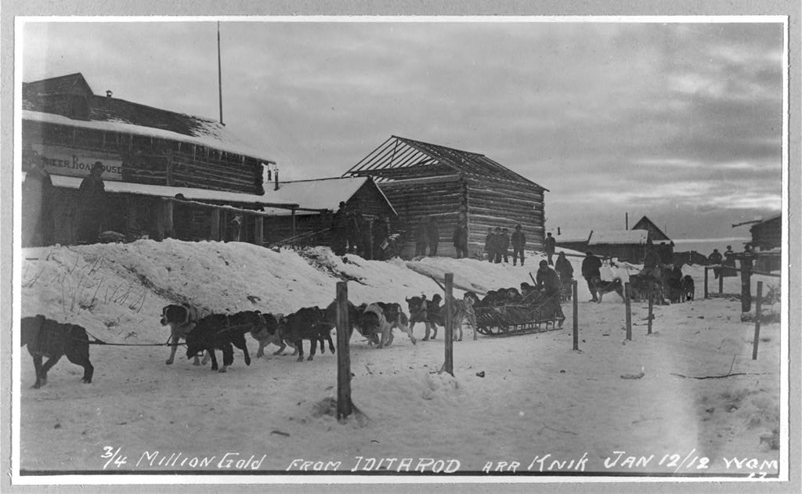
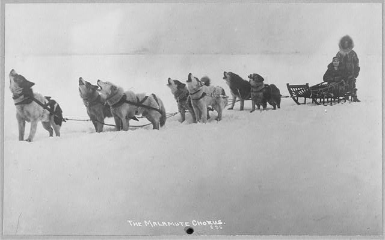
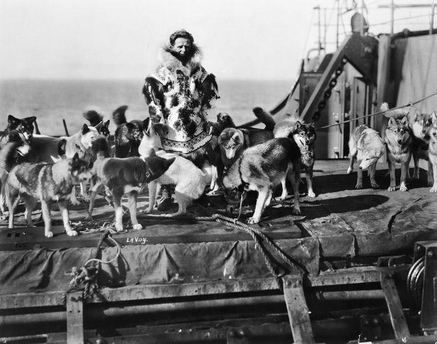
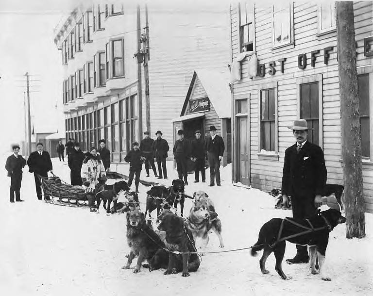
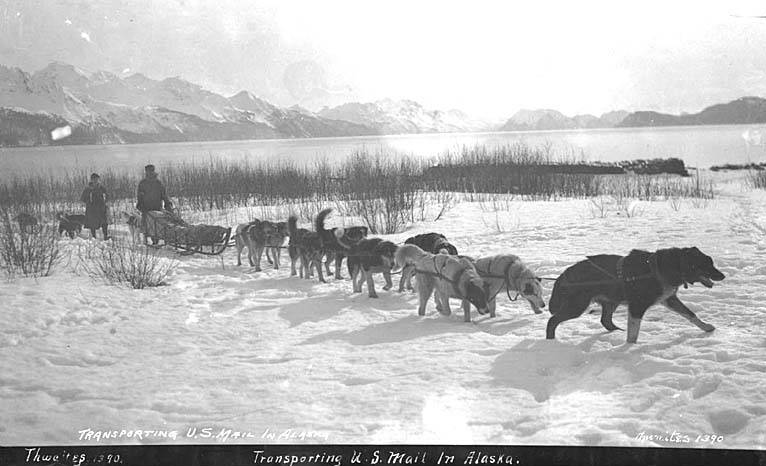
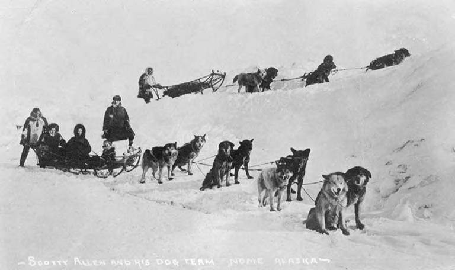
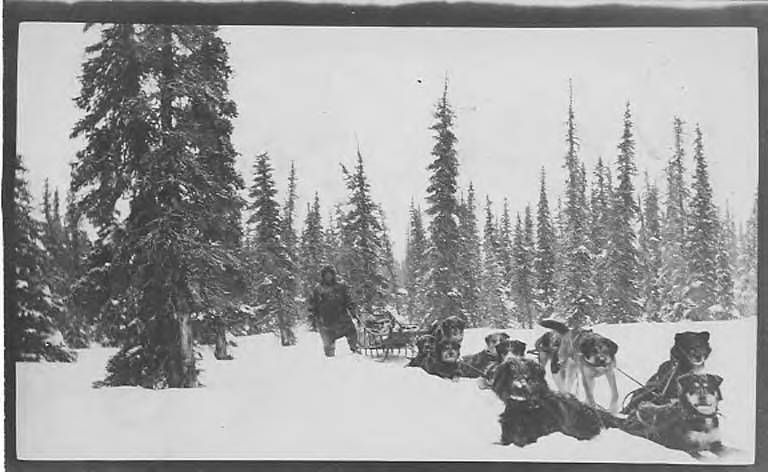
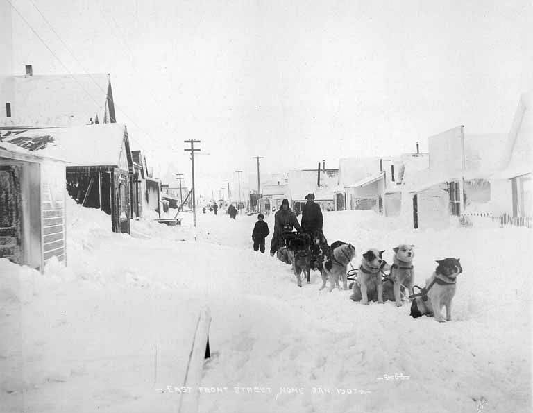

Across the Distance
Routes stretched between communities separated by hundreds of miles of winter country.
Lifelong partnerships forged in the wild.

Long before roads and modern machines, sled dogs were essential to life in Alaska—carrying mail, supplies, and hope across vast and unforgiving landscapes.

When snow closed in and isolation set, sled dog teams were the lifeline that connected remote communities to the resources and people they needed to survive.
Across long distances and harsh winter routes, dog teams carried more than freight. They connected villages, families, mail routes, medicine, news, and daily life.

Routes stretched between communities separated by hundreds of miles of winter country.

Sled teams carried letters, medicine, food, and essential supplies to communities beyond the road system.

Each delivery strengthened the connection between people, settlements, and the wider territory.

A deadly diphtheria outbreak threatened the children of Nome. With the community isolated in winter, dog teams became the critical link in a race to deliver lifesaving antitoxin.
The serum left Nenana on January 27, 1925. From there, relay teams carried it through Ruby, Galena, Nulato, Unalakleet, and onward toward Nome—crossing frozen rivers, mountain trails, extreme cold, and brutal weather.
After a relay of 20 mushers and nearly 150 dogs traveled a distance spanning 674 miles of Alaska wilderness, the serum arrived in Nome on February 2, 1925.

The partnership between mushers and their dogs continues today—honoring the legacy of those who came before and the land that shaped a remarkable way of life.
